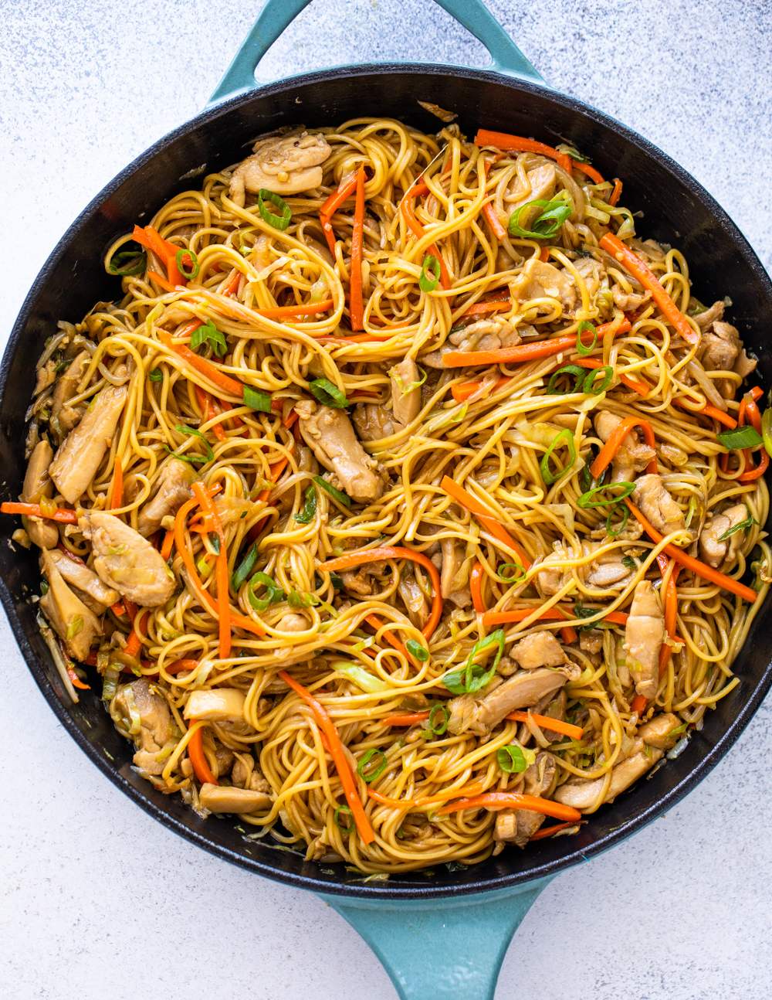

Chicken Chow Mein
Ingredients
- Egg Noodles
- Chicken Breast/Thigh
- Green Onion
- Carrots
- Mushroom
- Cabbage
- Optional for velveting: Flour
-
Sauce Ingredients:
- Soy Sauce
- Cooking Wine
- Hoisin Sauce
- Oyster Sauce
- Sesame Oil
- Optional: Gochujang/Chili Crisp
Instructions
- Boil Noodles according to packaging and set aside
- Combine 3 teaspoons of Soy Sauce and one teaspoon of all
other sauce ingredients in a bowl and mix
- Thinly slice chicken and place in a bowl
- If Velveting, add one teaspoon of flour
- Add one teaspoon of soy sauce and cooking wine to chicken and mix
- Separate whites from Green Onions and finely chop, save green parts for garnish
- In a large pot, cook chicken until sllightly charred, set aside
- In the same pot, add chopped green onion, carrot, and cabbage, stir fry for 8 minutes
- Add chopped mushroom and stir fry until mushrooms are done (4-5 minutes)
- Add water if pot dries out
- Add chicken, noodles, and sauce to pot. Mix and simmer together for about 3 minutes
- Garnish with chopped green onions, chili crisp, and enjoy!
Home